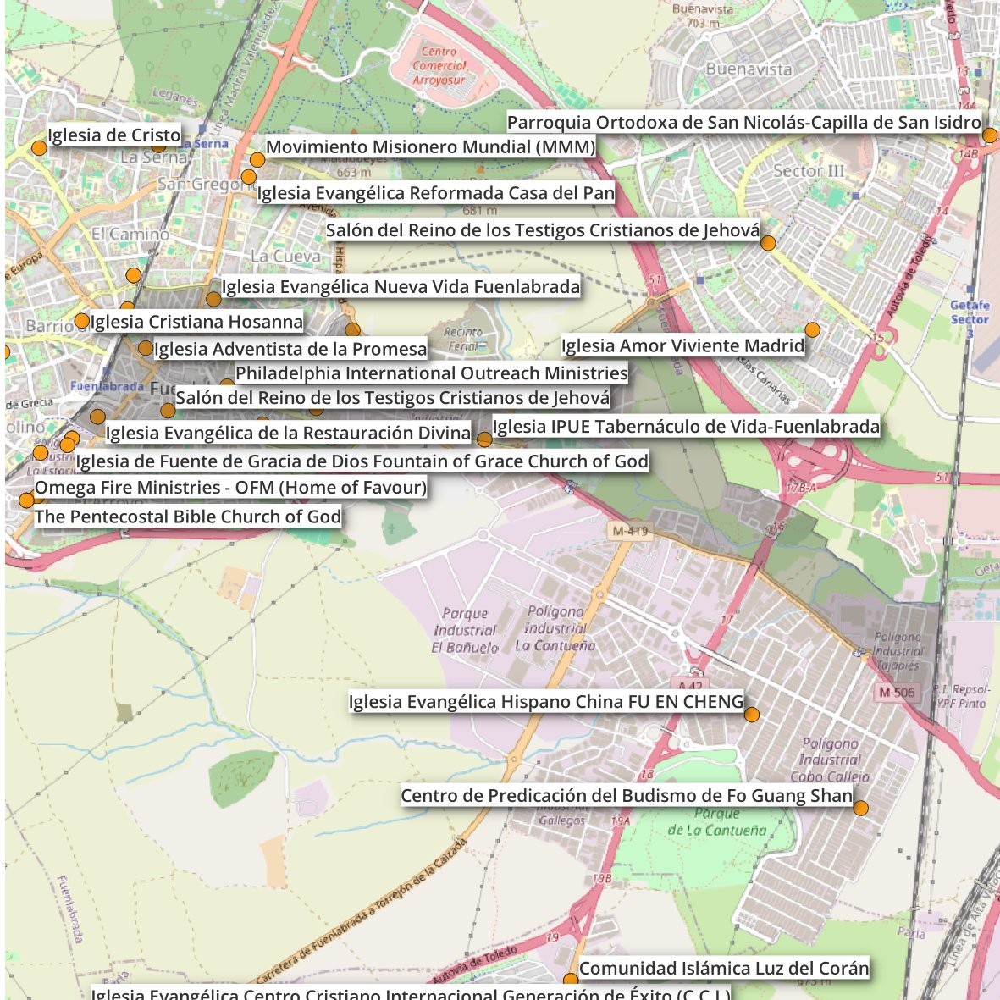
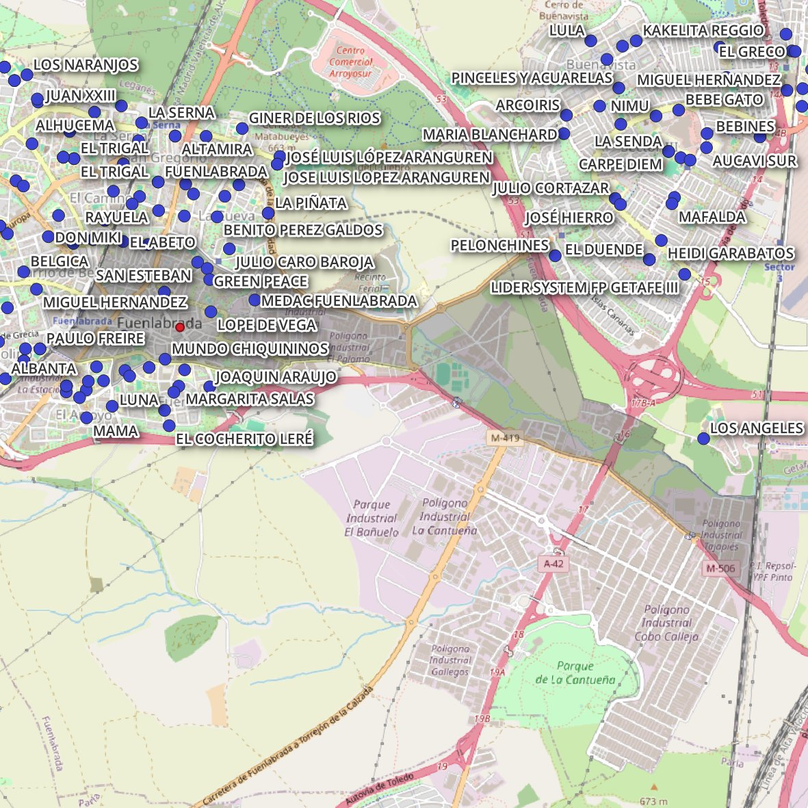

Puntos de interés en el territorio parroquial
Parroquia San Esteban Protomártir (Fuenlabrada) · Arciprestazgo de Fuenlabrada
Entidades religiosas no católicas

17 entidades religiosas no católicas en el territorio de la parroquia.
Evangélicos (14)
- Divine Healing Ministry International-Ministerio de Sanación InternacionalCalle de la Constitución 70 Bajo 1, Fuenlabrada
- Heaven on Earth Prayer Ministries International (Ministerio Internacional de Oración del Cielo en la Tierra)Calle Doctor Miguel Aguado 10, Fuenlabrada
- Iglesia Alianza Cristiana y Misionera Vida y FamiliaCalle Nicolás Copérnico 3, Fuenlabrada
- Iglesia Celestial de Cristo Parroquia de Fuenlabrada (Celestial Church of Christ - Ayilara Parish)Calle de Luis Vives 11, Fuenlabrada
- Iglesia Cuerpo de CristoCalle Veleta 2, Fuenlabrada
- Iglesia de Dios TodopoderosoCalle de la Constitución 64, Fuenlabrada
- Iglesia Evangélica de la Restauración DivinaCalle Veleta 7, Fuenlabrada
- Iglesia Evangélica Lord´s Chosen Charistmatic Revival Church-Iglesia Revivida Carismática De Los Elegidos Del SeñorCalle Eduardo Torroja 17 Nave 9, Fuenlabrada
- Iglesia Evangélica Nueva Vida FuenlabradaCalle Honduras 3, Fuenlabrada
- Iglesia IPUE Tabernáculo de Vida-FuenlabradaCalle Constitución 70, Fuenlabrada
- Iglesia Pentecostal Ministerio Torre FuerteGlorieta Miraflores 3 3B, Fuenlabrada
- Iglesia Pentecostal Unida en EuropaCalle de la Constitución 97, Fuenlabrada
- Philadelphia International Outreach MinistriesCalle de Castillejos 2 Local bajo, Fuenlabrada
- Reigning By Grace MinistriesCalle Sigüenza 6, Fuenlabrada
Adventistas (1)
- Iglesia Adventista de la PromesaCalle de Húmera 1, Fuenlabrada
Musulmanes (1)
- Comunidad Religiosa Islámica Mezquita Al-Sunna de FuenlabradaCalle Veleta 11, Fuenlabrada
Testigos de Jehová (1)
- Salón del Reino de los Testigos Cristianos de JehováCalle Navalcarnero 4 Local 2, Fuenlabrada
Fuente: Registro de Entidades Religiosas del Ministerio de la Presidencia, Justicia y Relaciones con las Cortes. Situación en el mapa: dirección geocodificada con CartoCiudad (IGN) o Nominatim (OpenStreetMap).
Centros educativos

9 centros educativos en el territorio de la parroquia (público: 6, privado: 3).
| Centro | Tipo | Titularidad | Domicilio | Web |
|---|---|---|---|---|
| GREEN PEACE | Colegio de educación infantil y primaria | Público | Calle de Miguel de Unamuno, 34, 28944 Fuenlabrada | Página web |
| LOPE DE VEGA | Colegio de educación infantil y primaria | Público | Calle FRANCISCO JAVIER SAUQUILLO, 17, 28944 Fuenlabrada | Página web |
| LOS MINIONS | Escuela infantil privada | Privado | Calle Salamanca, 7, 28945 Fuenlabrada | |
| MEDAC FUENLABRADA | Centro privado de formación profesional específica | Privado | Calle de Brasil, 18, 28946 Fuenlabrada | |
| MUNDO CHIQUININOS | Escuela infantil privada | Privado | Calle de Extremadura, 37, 28944 Fuenlabrada | Página web |
| PABLO PICASSO | Escuela infantil-casa de niños | Público | Avenida Francisco Javier Sauquillo, 47, 28944 Fuenlabrada | Página web |
| SAN ESTEBAN | Colegio de educación infantil y primaria | Público | Calle de los Ángeles, 13, 28944 Fuenlabrada | Página web |
| SANTIAGO RAMON Y CAJAL | Colegio de educación infantil y primaria | Público | Calle Comunidad de Madrid, 23, 28944 Fuenlabrada | Página web |
| VALLE DE ORDESA | Escuela infantil | Público | Calle Argentina, 9, 28944 Fuenlabrada | Página web |
Fuente: registro de centros educativos de la Comunidad de Madrid. Solo se recogen los centros de alta.